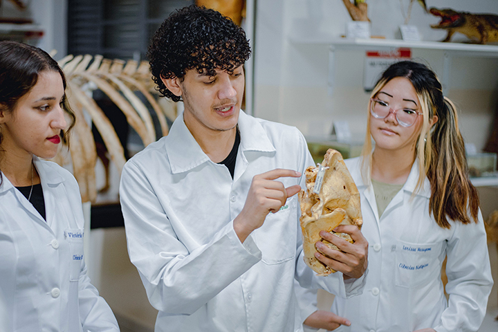

Banner 1 de 7
Acesso rápido
Serviços mais acessados
Facilite seu atendimento. Acesse rapidamente os principais serviços do CRBio-02.
Comece por aqui
Encontre o caminho certo para você.
Conteúdo organizado para tornar seu acesso mais simples, rápido e direto.
Serviços
Tudo o que você precisa, em um só lugar.
Acesse os principais serviços do CRBio-02 de forma simples, rápida e segura.
Orientações e procedimentos para o seu registro.
Acessar serviço →Solicite certidões, declarações e outros documentos.
Acessar serviço →Acesse a legislação, resoluções e normas da profissão.
Acessar serviço →Atuação em defesa do exercício legal e ético da profissão.
Acessar serviço →Notícias
Fique por dentro das principais novidades.
Acompanhe as últimas notícias, comunicados e ações do CRBio-02.
Institucional
Compromisso com a Biologia e com a sociedade.
O CRBio-02 atua para valorizar o profissional biólogo, fiscalizar o exercício legal da profissão e contribuir para a conservação da biodiversidade e a qualidade de vida da sociedade.

Biodiversidade
hoje, mais vida
amanhã.
Acesso à informação
Transparência e informação ao seu alcance.
Acompanhe dados, documentos, contratos e esclareça suas dúvidas com facilidade, de forma rápida e segura.